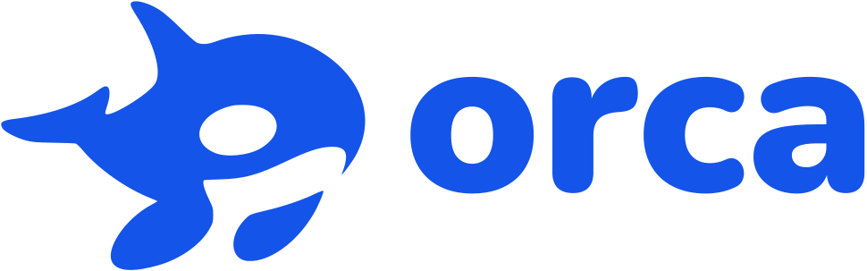
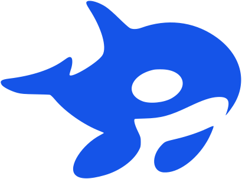
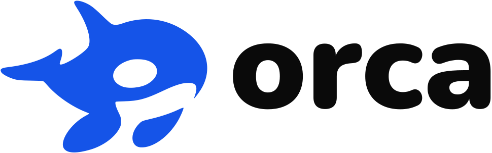
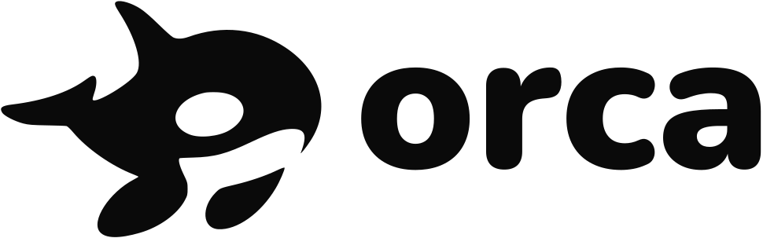
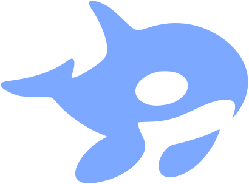
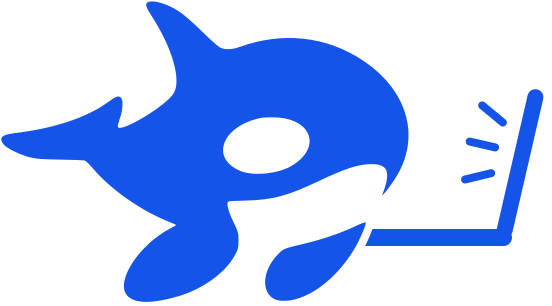

Agência Orca · cor escolhida: Azul-oceano · nada disso está aplicado ao site ainda

Logo
O desenho é o seu, agora em vetor e no mesmo azul dos botões (#1554E8). No fundo escuro, o logo fica branco, porque azul sobre preto fica apagado (contraste de 3,3 : 1). A palavra "orca" é a fonte Nunito Black transformada em desenho, então aparece igual em qualquer computador.
Símbolo

Símbolo + nome
Fundo escuro
Alternativa: nome em preto

Uma cor só: impressão, carimbo, documento

Topo no computador (40 px)Topo no celular (32 px)Rodapé (24 px)
Ícone do site
Só o símbolo, em azul. Quando o navegador está no tema escuro, ele troca sozinho para um azul mais claro (#7DA8FF), que aparece bem no fundo escuro.
16 px32 px48 px96 px
Agência Orca | Site, loja…

Agência Orca | Site, loja…
Orca no notebook
A orca digitando, com a nadadeira no teclado e olhando para a tela.


Minha recomendação: usar como ilustração (topo do site, página de obrigado, página de erro e destaques do Instagram), não no lugar do logo. No ícone do site e no topo, em tamanho pequeno, o notebook vira ruído e a orca perde força. O logo continua sendo a orca sozinha.
Cor: Azul-oceano
O azul aparece no logo, nos botões e nos links. O resto do site continua no preto e branco da orca. O botão flutuante do WhatsApp fica no verde do WhatsApp, que todo mundo reconhece.
Azul-oceano · escolhida
Calmo e confiável. Combina com o mar da orca e não briga com o verde do WhatsApp.
Botão flutuante do WhatsApp: verde #1DA851, um pouco mais escuro que o oficial (#25D366), para o ícone branco passar no contraste (3,1 : 1).
Fonte: Nunito
Sem serifa, com pontas arredondadas que conversam com as curvas da orca. Gratuita (Google Fonts). No site, ela fica hospedada no próprio servidor, num arquivo só, para não pesar.
Aa
RegularSemiExtraBlack
Do anúncio ao cliente no seu WhatsApp, com uma equipe só.
Você vende pelo WhatsApp e se perde nos pedidos.
Áudio, foto, lista pela metade. Alguém digita tudo de novo, erra a quantidade, e o pedido de ontem some no meio da conversa.
Títulos em Black (900), subtítulos em Extra (800), texto em Regular (400), botões em Extra (800).